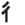

|  | goleft |
| KOU |
Go get me some COcaine. |
|
Person, plus nail, PLUS those two extra lines on top, which are SPEED LINES, didn't you know?
 So, a person holding a nail is going somewhere, and they get speed lines because they are going fast. I assume to a crucifixion. |
| ( へ or に ) い＊く |
go
★★★★★ |
| ( を ) おこな＊う |
to carry out a task, to execute a command: used about a single person getting orders. (as opposed to related words such as 制定 (せいてい） or 実施 （じっせん） which refer to rules which affect all the people)
★★★★☆ |
| ( ??? ) ゆ＊く |
for someone to go away. Also means, for someone to proceed and march ever forward.. (*) Here's the COCK part: Although the meaning is different, the OKURIGANA is the same - so there's no way to tell 行く from 行く！
COCK
★☆☆☆☆ |
| へ or に 旅行 する |
vacation
★★★★★
a vacation, or just travel in general. |
| 流行 | |
| 行動 |
behavior
★★☆☆☆
behavior, conduct. Can be used in a good or bad way. |
| XXX 行き |
a train / bus / plane bound for XXX ★★☆☆☆ NP |
| 行為 |
deed
★★☆☆☆
NP
one's behavior. Basically the same as 行動（こうどう）but a little more formal. Usually used in newspapers or discussions of trials. |
|
behavior/ action
態度 姿勢 行動 行為 |
|
carry out /put into effect
実戦 行う 設ける 制定 実施 創立 成立 |
|
carry out, accomplish
遂行する 成し遂げる 貫く |
|
filial piety
親孝行 孝行 |
 KANJIDAMAGE
KANJIDAMAGE
 Number
1231
Number
1231